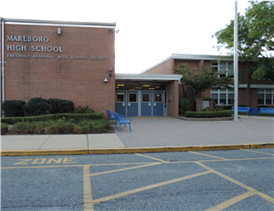
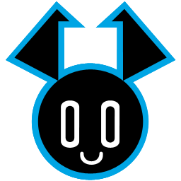

Hello There! Here you can learn all about what makes me who I am!
The Basics:
My name is Kalen Tobin. I am currently 16 years old, going onto 17. As of now, I am in 11th grade at Marlboro
High School. I live in Woodcliff, just next store to Hidden Village.
Background:
I am from the Tobin Family. We are currently of two different sides from two different origins.
The Holton side is from my mother, an immigrant family from Europe that came here many years ago. My grandfather
grew up during World War 2, and participated at the offices to assign soldiers jobs years after. Mom's brother, Jeffry, has his own branch with two children and three dogs(You have no idea how many they've had over the years).
On the other side is the Tobins, my father, who are of Irish heritage. Tobins have been around for centuries,
and we are just one of many across America. The name is derived from Anglo-Norman settlers in Irland after the Strongbow Invasion. The word simply translates to "God is good" in Hebrew.
Education:

My education is from Marlboro High School. My previous schools included Marlboro Memorial Middle School (MMMS),
and Defino Elementary. I've had my laughs, my struggles, and more along the way, but there have always been those that have helped me along the way, and I greatly thank them for that!
Not to pick favorites, but I’d prefer MHS over the other two.
Favorite Shows:

My personal favorite shows include the OG Transformers, Transformers EarthSpark, Murder Drones, and My Life As A Teenage Robot (So yeah, anything with
robots in it). Shows like them are what fueled my creativity at such a young age. Along with that, I found a facination in the stories they tell, and how they make these characters,
like the way Murder Drones did! Sometimes I binge watch these
four whenever I have nothing better to do. I enjoy the ladder (MLAATR) in
more
ways than one but I don't have time to say that! But still, I totally recommend watching all of them!
Hobbies:
My personal hobby boils down to creating stories of different kinds on Google Sites, one of them is out there already.
I have been a storyteller for almost all of my life, and I’m not going to give it up now, while I’m on a roll! To
think that it all started because of a few movies I watched and books I read.
I personally run a Youtube channel under the name KGT Studios. It’s where many of my little ideas go when I want
to show them off to the world.
It all started back in 2014, when I attempted my first ever videos. They are bad, AND I DO NOT RECOMEND WATCHING
THEM! Although, I have improved over the years, this decade is a prime example of that change! I am slowly growing
more and more proud of my work every day I post!
I have more than seventy videos already up with more than eighty subscribers! If you want to check them out, click the logo above.
I'm An Ally:
I am an ally to the LGBTQ community. I accept people for the way they are and refuse to judge them for the
smallest little things, this includes sexuality and gender identity. As long as you are good at heart, you’re good in my book!